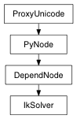

class counterpart of mel function ikSolver
The ikSolver command is used to set the attributes for an IK Solver or create a new one. The standard edit (-e) and query (-q) flags are used for edit and query functions.
max error
Derived from mel command maya.cmds.ikSolver
Returns the maximum number of iterations used when solving.
| Return type: | int |
|---|
Derived from api method maya.OpenMayaAnim.MFnIkSolver.maxIterations
valid solverType (only ikSystem knows what is valid) for creation of a new solver (required) Flag can have multiple arguments, passed either as a tuple or a list.
Derived from mel command maya.cmds.ikSolver
Returns the tolerance used when solving.
| Return type: | float |
|---|
Derived from api method maya.OpenMayaAnim.MFnIkSolver.tolerance
max error
Derived from mel command maya.cmds.ikSolver
Sets the maximum number of iterations used when solving.
| Parameters: |
|
|---|
Derived from api method maya.OpenMayaAnim.MFnIkSolver.setMaxIterations
valid solverType (only ikSystem knows what is valid) for creation of a new solver (required) Flag can have multiple arguments, passed either as a tuple or a list.
Derived from mel command maya.cmds.ikSolver
Sets the tolerance used when solving.
| Parameters: |
|
|---|
Derived from api method maya.OpenMayaAnim.MFnIkSolver.setTolerance